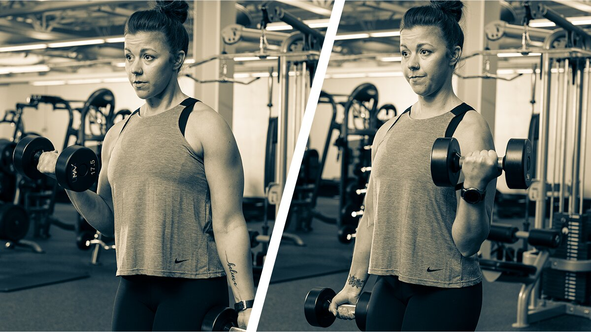
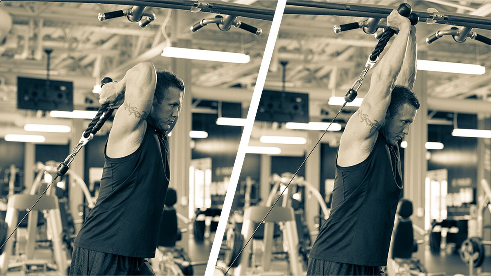

Chest | Back | Shoulders | Arms | Quads | Hamstrings | Calves | Abs
What are you training today? If you have biceps and triceps on the schedule, consider yourself covered. This workout is quick, but it's not for the faint of heart. Your guns had better have some pump action in order to handle the assault.
You'll do three exercises per muscle group in the form of two trisets taped together into a single six-move circuit. But don't worry, you won't have to hold down six pieces of equipment. Just grab these:
- A barbell or EZ-bar (fixed weight or plate loaded)
- Two dumbbells
- One cable stack with a rope handle (a resistance band can also work in a pinch)
Got it? Then let's get to work. And if you like it—spoiler alert: you will—follow the links above to check out similar three-move workouts for every other body part.
Three Moves for Time-Efficient Gains
The idea is to move quickly, transitioning from one movement to the next and resting as little as possible. You'll do an entire biceps triset, rest for 90 seconds, then move to the triceps triset. Alternate between these two trisets 2-3 times.
This biceps and triceps workout will take you no longer than 25 minutes, but you will feel it long after you finish the last rep. So, sip your pre-workout of choice, warm up, and mentally prepare yourself for the insane pump you're about to experience.
Arm yourself for arm day with our most popular pre-workouts.
Workout Notes
- Weight selection not ideal? Don't sweat it. The volume will roast you even with light weights.
- Do this workout no more than once per week. It'll keep you sore for days.
- Beginners should only do 2 rounds of this workout.
- Feeling tough? Pre-workout kicked in? Try for 3 rounds.
Triple Awesome Arms Circuit
1. CIRCUIT
Perform the exercises in order starting with the curl triset, then immediately performing the triset for triceps with as little rest as possible in between. Rest for 2 min. then repeat 1-2 more times.
Alternating Dumbbell Curl
3 sets, 20 reps (alternating, 10 reps per side, no rest)
3 sets, 10 reps (no rest)
3 sets, 10 reps (left side, no rest)
3 sets, 10 reps (right side, no rest)
Low cable overhead triceps extension
3 sets, 10 reps (rest 2 min.)
Technique Tips
The mind-muscle connection is crucial to this workout, which means that proper form is crucial! Especially once you're feeling fatigued, don't start cheating. Keep it strict and clean, and you'll feel it working everywhere you should and nowhere you shouldn't.
Barbell Curl
- Use a barbell or EZ-bar, whichever your wrists and elbows prefer.
- Squeeze the bar hard to activate every muscle fiber possible.
- Lower the weight under control after each rep.
- Perform the lifting portion of each rep powerfully.
Alternating Biceps Curl

- On the way up, turn your wrists so your pinky faces your shoulder.
- Lift powerfully, but without swinging.
- Lower the weight under control after each rep.
Cable Rope Hammer Curl
- Don't let your elbows flare out or come forward. Keep those upper arms locked in place!
- Separate the ends of the rope at the top and pause for a second before lowering.
- When the weight is lowered and your biceps are stretched, pause for a second before the next rep.
EZ-Bar Skullcrusher
- Keep your upper arms vertical at all times.
- No bench? Do these on the floor. They're still good.
- Place your hands as wide as needed to be comfortable for your shoulders.
Single-Arm Triceps Kick-Back
- No dumbbell? Use the cable for these.
- If you're pressed for time, do both arms together. If not, focusing on each arm separately will help you in the long run.
- Keep your core braced. No swinging!
- Pause for 1 second at the top and bottom of each rep.
Low Cable Overhead Triceps Extension

- Use a low anchor and focus on pushing toward the ceiling.
- Separate the rope when your triceps are overhead and fully contracted.
- On the way down, don't try to force a deeper stretch than your arms will allow. Your arms should move through this movement without any pain.
If you love this style of training and want to apply it to your other muscle groups, try the other workouts in the Triple Threat series.
Chest | Back | Shoulders | Arms | Quads | Hamstrings | Calves | Abs